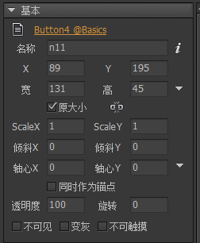
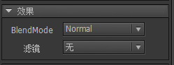

Guide

元件
每个舞台中的组成元素我们称之为元件，元件的类型有很多，他们是：
基础元件图片、图形、动画、装载器、文本、富文本、组、组件。组合型元件标签、按钮、下拉框、滚动条、滑动条、进度条。特殊元件列表。
在舞台上选中任意一个元件，右边的属性栏出现共同的属性设置面板有:
基础属性

名称设置元件的名称。运行时可以通过GetChild(名称)获得这个元件。元件允许重名。如果有重名情况出现，在工具栏会出现一个提示。
宽高设置元件的宽度和高度。原大小勾选原大小可以使元件大小恢复到素材的原始大小。当素材被外部修改后，例如一张图片素材，被设计师从50x50变成100x100，如果这里勾选着原大小，则元件的宽高也自动变成100x100；如果这里没有勾选，则元件的宽高将保持50x50，图片发生缩放。宽度和高度限制：左边为最小值，右边为最大值，0表示不限制。注意：修改宽高限制不会修改当前的宽高，即使当前的宽高值不符合限制。ScaleXScaleYScale与宽高都同样可以改变元件的显示大小，他们的不同之处在于：Scale是整体直接缩放，而宽高是改变元件的包围大小。例如，一个设置了九宫格的图片，如果改变它的Scale值，九宫格不会起作用，如果改变图片的宽高，则九宫格起作用。又例如，一个组件，如果改变它的Scale值，则组件作为一个整体放大或缩小，它里面的关联关系不会发生作用；如果改变组件的宽高，则只是组件的矩形范围增大或缩小，他里面的内容并不会自动增大或缩小，要依靠关联功能进行调整。
关联系统只对元件的宽高有效，不计入Scale的影响。
倾斜X倾斜Y设置元件的倾斜值。轴心X轴心Y旋转、缩放、倾斜这些变换时的轴心点。取值范围是0~1。例如X=0.5，Y=0.5表示中心位置。点击右边的小三角形可以快速设置一些常用的值，比如中心，左下角，右下角等。同时作为锚点勾选这个选项后，元件的原点位置将设置为轴心所在的位置。默认情况下，每个元件的(0,0)都是在左上角；勾选了轴心同时作为锚点后，则元件的(0,0)在轴心的位置。注意，关联系统是不计入这个选项的影响的，所以勾选了锚点后的元件，再使用宽高类的关联，可能表现不正常。透明度设置元件的透明度。0表示全透明，100表示全不透明。旋转设置元件的旋转角度，单位是度（degree）。正数表示顺时针旋转，负数表示逆时针旋转。不可见使元件处于不可见状态。在编辑状态下，即使勾选了，元件依然是可见的，只有预览状态和运行状态，才生效。变灰使元件呈现一个灰度的效果。默认情况下，FairyGUI会使用一个颜色滤镜为其生成灰度效果。但对于组件，除了使用颜色滤镜使其整体改变灰度，还可以自定义效果。例如，一个按钮组件，由底图和上面的图片文字组成。左边是正常状态，中间是设置了“变灰”后的效果。如果我们只是希望处于变灰状态时，只要图片文字变灰，不希望底图变灰，那么可以像右图那样，在组件里定义一个名称为“grayed”的控制器，由这个控制器去控制具体变灰的状态。定义了这个名称的控制器后，默认的整体变灰效果消失。

不可触摸使元件处于不可交互的状态。鼠标点击和触摸屏触摸都不会有任何事件产生。注意：图片、普通文本（不包括输入文本和富文本）、动画是永远不可触摸的。如果要对他们侦听点击事件，请转换为组件，或者使用装载器(GLoader)。
效果属性

BlendMode这个提供了一部分的混合选项设置。对于Unity平台，对图片、动画、文字，你可以放心地修改它们的BlendMode。但对于组件，请谨慎使用。组件的BlendMode需要使用到FairyGUI提供的PaintMode技术，目标组件会转化为RenderTexture，再使用混合选项。这里面会有一定的内存消耗。但实现细节无需开发者介入。对组件使用BlendMode会使场景里出现CaptureCamera对象，这是正常的。
Unity的Blend效果与编辑器中的预览可能会有差别。开发者可以通过使用以下代码重定义混合效果。注意：设置了特别BlendMode的显示对象无法与其他显示对象合并Draw Call。
|
滤镜目前编辑器支持两种滤镜的定义，颜色滤镜和模糊滤镜。对于H5类平台，请谨慎使用滤镜，因为会带来一定的消耗；对于Unity平台，你可以放心地对图片、动画、装载器使用颜色滤镜，这几乎不会带来额外消耗，但对于其他类型的元件，例如组件，请谨慎使用。组件的滤镜需要使用到FairyGUI提供的PaintMode技术，目标组件会转化为RenderTexture，再使用滤镜。这里面会有一定的内存消耗。但实现细节无需开发者介入。对组件使用滤镜会使场景里出现CaptureCamera对象，这是正常的。
注意：设置了滤镜的显示对象无法与其他显示对象合并Draw Call。
TIPS属性

当鼠标移到元件范围内时，显示这里可以定义的文本。用户需要提供一个组件作为显示。这个组件一般扩展为标签，以便底层将TIPS文本设置到“标题”中。打开主菜单“文件”->“项目设置”，然后在弹出的对话框里选择“预览设置”，右边面板会出现一个“TIPS组件”的设置，将你制作好的标签组件拖入即可。这里的设置仅适用于编辑器预览，运行时需要用代码再次设置，例如：
|
GObject
设置坐标SetXY或者单独设置x、y。设置大小SetSize或者单独设置width、height。SetSize还可以带第三个参数：
|
设置大小限制minWidth、maxWidth、minHeight、maxHeight。设置ScaleSetScale或者单独设置scaleX、scaleY。设置轴心SetPivot。
|
设置可见visible = true/false。设置交互touchable = true/false。设置变灰grayed = true/false。设置激活enabled = true/false。 元件的激活状态其实是由变灰+不可触摸共同组成。
|
设置旋转rotation。Unity版本还支持rotationX和rotationY。2D UI由正交相机渲染，设置rotationX或rotationY可以有旋转效果，但无透视效果。FairyGUI提供了透视模拟的功能。例如：
|
获得原生对象displayObject。例如：
|